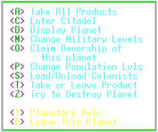

|
Planet
Command Menu |
|

 Computer
Displays
Computer
Displays
|
 Navigation
Console
Navigation
Console
|
 Citadel
Command Menu
Citadel
Command Menu
|


 Planet
Commands
Planet
Commands
<A>
Take All Products
This will load your
empty holds with the products available on the planet. The dock workers
will load your ship to the brim with as much of each of the products that
is available beginning with the cargo of greatest value (Equipment) to
the least value (Fuel Ore).
<C>
Enter Citadel 
You enter the Citadel
(and display the Citadel Menu). If there is no citadel on this planet,
you will have the option to build one. The necessary products and
labor force needed in the construction will display. You will not
be issued a building permit if you don't have the necessary people and
commodities.
<D>
Display Planet
This will show the
planet number, type,name and the alias of the player who created it.
There is also an informative chart showing how many colonists are working
in each production area, how many units of each product are being produced
daily, the quantity of each product currently available on the planet,
and how many of each you have on your ship. Citadel information including
level, construction underway and credits in the vault is also available.
<M>
Change Military Levels
You will want to move
your fighters around to protect your territory. This option will
allow you to take fighters currently on the planet or to leave fighters
you have escorting you. The fighters on the planet are controlled
by the Combat Control Computer (level 2) in the Citadel. If there
is no Combat Control Computer there, the fighters would better serve you
patrolling the sector outside the planet. Leaving fighters on a planet
will designate the planet as yours.
<O>
Claim Ownership
Let the entire universe
know who controls the planet. Use this option to set the planet as
either Personal or Corporate. This is a must when you've gone to
all the trouble to capture one of your opponent's planets.
<P>
Change Population Levels
Throughout the course
of the game you may wish to change the distribution of your workforce among
the commodities. This selection provides you with an easy, efficient
way to order your workers to the job you need done.
<S>
Load/Unload Colonists
Colonizing your planets
can contribute greatly to your trading profits. This will enable
you to leave the colonists you've brought from Terra or pack everyone up
and move them to another planet. Keep a close watch on your planet's
population because many planets experience a growth/death cycle.
If your planet has too many people to support, the raw materials needed
to produce your commodities will be used up by the surplus population and
your production rates will be adversely affected.
<T>
Take or Leave Product
This will let you
specify to the dock workers which type of products you want to leave and
which ones you want loaded on your ship.
<Z>
Try to Destroy Planet
First you purchase
Atomic Detonators from the Hardware Emporium. That is the easy part.
You then have to fight your way into the sector containing the planet.
After battling the fighters, Quasar Cannons, and any other military defenses
that may be there, you have the ability to lay your Atomic Detonators.
Colonists have been trained in the disarming of detonators. Most
of the training was rushed and provided by inexperienced teachers, so they
aren't very good at it. Most of their attempts literally go up in
smoke, and if you are still on the planet when their attempt goes awry,
you go awry with it. You have the option of suing your conventional
weapons to kill off the colonists before you lay the detonators so you
don't run the risk of getting killed by their lack of skill. If you're
willing to risk the bad Karma to be a little safer, this might be the correct
option for you.
<!>
Planetary Help
Display the portion
of the documentation describing the Planetary functions.
<Q>
Leave This Planet
Take off from the
planet.
|
Computer
Displays
|
 Exit
Help
Exit
Help
|
Citadel
Command Menu
|